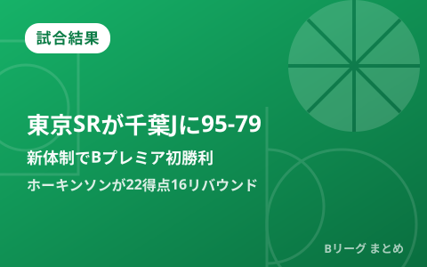

東京サンロッカーズがBプレミア初勝利 千葉Jに95-79、ホーキンソンが22得点16リバウンド

9月26日、TOYOTA ARENA TOKYOで行われたB.PREMIER開幕週の東京サンロッカーズ対千葉ジェッツは、東京SRが95-79で勝利しました。今季からチーム名・カラー・本拠地アリーナを一新し、新ヘッドコーチにショーン・デニス氏を迎えた東京SRにとって、開幕2戦目で待望の初勝利です。ジョシュ・ホーキンソンが22得点16リバウンドのダブルダブルを記録し、ベンチ勢も37得点と厚みを見せました。同日行われた宇都宮ブレックスの白星発進、名古屋ダイヤモンドドルフィンズの大勝など、開幕週の他カードも合わせて振り返ります。
新体制の東京SR、第4Q序盤の11-0ランで突き放す
試合は前半だけでリードチェンジが9回に及ぶ接戦でしたが、第4クオーター序盤に東京SRが11-0のランを決めて一気にリードを拡大。堅い守備を軸に主導権を渡さず、そのまま試合を締めくくりました。チーム名・カラーの刷新に加え本拠地アリーナも移転し、前シーズン最下位からの再建を掲げるシーズン開幕2戦目での、価値ある初白星となりました。
ホーキンソンが22得点16リバウンド、ベンチ勢も37得点で厚み
この日はジョシュ・ホーキンソンが22得点16リバウンドのダブルダブルでチームを牽引したほか、新加入のローリー・アドキンスが13得点、ヤン・ラベンス・ヘイガーJr.が9得点6リバウンド4アシストと好プレーを見せました。ベンチからもドンテ・グランサムが13得点、田中大貴が14得点、ベンドラメ礼生が10得点と続き、ベンチ勢合計37得点はチーム全体の厚みを示す結果となりました。
| 選手 | スタッツ |
|---|---|
| ジョシュ・ホーキンソン | 22得点16リバウンド（ダブルダブル） |
| ローリー・アドキンス（新加入） | 13得点 |
| ヤン・ラベンス・ヘイガーJr. | 9得点6リバウンド4アシスト |
| 田中大貴（ベンチ） | 14得点 |
| ドンテ・グランサム（ベンチ） | 13得点 |
| ベンドラメ礼生（ベンチ） | 10得点 |
開幕週の他カードは、宇都宮が白星発進、名古屋Dは川崎に大勝
同じ9月26日、日環アリーナ栃木で行われた宇都宮ブレックス対横浜ビー・コルセアーズは、ホームで迎えたBプレミア初戦を宇都宮が88-78で制しました。新加入のトレイ・ケルがチーム最多の19得点6リバウンド5アシストと活躍し、序盤から主導権を握る展開に。5選手が2桁得点し、ベンチ勢も41得点をマークする総力戦での白星となりました。また、名古屋ダイヤモンドドルフィンズは川崎ブレイブサンダースに93-63で大勝し、開幕週を白星で折り返しています。
Q. 「東京サンロッカーズ」とは？
A. 旧チーム名「サンロッカーズ渋谷」が2026-27シーズンより、チーム名・エンブレム・本拠地アリーナを一新し「東京サンロッカーズ」として新リーグ「B.PREMIER」に参入しています。新リーグの詳細はBプレミア開幕の記事でまとめています。
出典：バスケットボールキング「東京SRがBプレミア初勝利…開幕2戦目で千葉Jから95得点、堅守で流れ呼び込む」／バスケットボールキング「宇都宮ブレックスがBプレミア初戦で好発進…ベンチポイント41得点、新戦力も活躍し横浜BC下す」／デイリースポーツ「名古屋Ｄ、川崎に大勝」ほか
https://news.yahoo.co.jp/articles/6caaa04cc7c4568b27c0d62ea917c2bc12912bd7
https://news.yahoo.co.jp/articles/2dd0d88aca0edbc485853353cbe007b0c283731d
https://www.daily.co.jp/general/2026/09/26/0020863791.shtml
https://www.bleague.jp/game_detail/?ScheduleKey=506390&tab=1